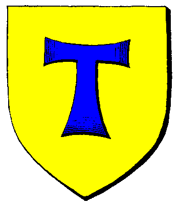

| Übersicht,
Off-Topic |
|
Spielgemeinschaft SW
|
Harry Wurstbrot
 |
Könnten wir nicht eine Kickstarterkampagne starten, um SW zu kaufen und es nach unseren Wünschen zu formen und / oder etwas Ähnliches einfach neu zu gestalten.
Es gibt ja nur drei Probleme (keine neuen Spieler, weil es Geld kostet; man braucht Geld, um das Spiel supporten zu können; Grafiken 15 Jahre alt), die SW daran hindern eine goldene Gans des Spielspaßes zu werden und eigentlich kennen wir doch alle die Lösungen für die Probleme.
Wenn es richtig gut aufgezogen wird und sich ein Team von zehn Leuten findet, die auch schon Erfahrung im Businessbereich gesammelt haben, würde es klappen. |
21.12.14 11:11

 |
|
Ateara Tinuhin
 |
Diese Überlegung setzt voraus, das die aktuellen Betreiber das Spiel verkaufen würden... Da sie es meines Wissens nicht tun ist jegliche weitere Überlegung dazu überflüssig. |
23.12.14 18:39
|
|
Priboi
 |
gab es nicht mal einen clone? ;) wie hiess das nochmal? Noname.org oder sowas*g* |
23.12.14 18:42
|
|
Hippie Hasenfutter
 |
Wer sind eigentlich diese "Betreiber", wobei der Begriff wohl irreführend ist, denn betreiben klingt nach Aktivität. |
23.12.14 21:38
|
|
Braeniver Undomiel
 |
also es scheint einen "Betreiber" Wechsel gegeben zu haben, denn webtales.de und scherbenwelten.de gehören nicht mehr den hier noch im Impressum stehenden Personen...schaut mal bei der DENIC selber nach...es scheint also was passiert zu sein, von dem wir (noch) nichts offizielles wissen.... |
23.12.14 23:39
|
|
Tattergreis
 |
och, immer alles nur eine frage des preises ;) |
25.12.14 19:33
|
|
Gerno Flinklöffel
 |
So wie ich das sehe läuft scherbenwelten.de immer noch auf Aronius, oder? |
25.12.14 22:13
|
|
Harry Wurstbrot
|
Ich würde die Grafiken machen, wenn sich einige Programmierer finden würden.
Eine UG ist auch schnell gegründet. Aber bis jetzt bin ich noch alleine in der Taskforce. |
23.01.15 19:55
|
|
| Narath Nargaroth (RIP) |
Ich mag das Spiel da es Old School ist und viele Dinge sich hier vereinen Strategie/Simulation/RPG
Abo weis ich noch nicht, nicht das es gegen die Wand gefahren wird und man steht nacher da wie der Ochse vor dem Berg
Gruß ein Neuer ! |
24.01.15 20:05
|
|
Krâtos
 |
Das ganze Programm aufzusetzen mit neuen Anregungen ist sicher ein ganz nettes, spannendes Projekt aber leider auch recht langwierig.
Plus dass zumindest meine Erfahrung mit Webanwendungen nahe 0 liegt und ich gerade an genügend anderen Baustellen code als dass ich mich in der Lage sähe dafür "hier" zu schreien.
Wenns da wen mit Erfahrung gibt, der ein Konzept sinnvoll vorstellen kann würde ich mich für die algorithmische Ausarbeitung schon gewinnen lassen, aber sehe das leider noch nicht gegeben =/ |
14.02.15 16:58
|
|
Lyra Callionymus
 |
Aussenwelten ist nun ganz weg *heul*. Daraus hätte schon etwas gemacht werden können. Es gab sogar Leute, die sich damals bereit erklärt hätten. Nun ist das Spiel einfach weg. Wer hat am Ende etwas davon gehabt? Eine Win-Win-Situation ist genau das Gegenteil. Hoffentlich ereilt Scherbenwelten ein besseres Schicksal. |
15.02.15 17:45
|
|
| Opheon (RIP) |
ich wäre da nicht all zu Optimistisch was SW angeht Lyra Callionymus |
16.02.15 11:57
|
|
Tjárius
 |
Ein spetzel hat mir, ehe er nach Australien ging ein spiel namens Freewar ans herz gelegt.
Recht komplex, hat auch ein eigenes Wiki...
Ist aber sehr umfangreich, statt ap eine Laufdauer von 5 Sec pro Feld... (kann mit den richtigen XP und Mitteln bis zu 2 sec pro Feld verkürzt werden).
Da gibt es 14 Server, davon einer Action und einer RP. Da wären sicherlich einige Interessiert an SW, die zahlen dort auch so genannte "Sponsis", die mit echtem wie auch mit Spielgeld gekauft werden können, um zusatzoptionen im Spielablauf zu haben ect. |
28.03.15 18:02
|
|
Tjárius
|
*schnell Pfeil drauf klebt: Keine Werbung, nur eine Idee* |
28.03.15 18:02
|
|
Theogrimm
 |
In meinen Augen ein vergleichbares Konzept zu Sw hätte Eve Online.
sicherlich ein Mmorpg, aber mit einem ausgeklügeltem Wirtschafts- und Produktionssystem. Dazu einer Spielleitung die aktiv das Spielgeschehen lenkt und auf die Comunity eingeht (man schaue sich das Fan-Fest an, wo der InGame Rat der Welten eingeflogen wird um über belange des Spiels zu reden - auf Kosten der Entwickler - dazu noch ne riesen Gaudi).
Jedoch glaube ich kaum, dass dort eine Gemeinschaft von 20-30 Leuten (falls wir mit sovielen einfallen würden) bei zuletzt 500.000 Spieler Interesse an einem Browsergame hervor rufen könnte.
Vorteil an diesem Mmo wäre, dass die Talente in Echtzeit geforscht werden, man diese in Reihe schalten kann und somit auch wenn man offline ist, progress machen kann. Zumindest an dem Part, der mit Abstand am längsten dauert.
Aber mehr als unzählige Berichte habe ich auch noch nicht in Erfahrung gebracht. |
08.06.15 5:45
|
|
Thor von Asgard
 |
EVE online ist schon nen geiles spiel... halt nen komplett anderes Setting und eher auf powergaming ausgelegt.
RP mäßig gibt´s zwar schon was, aber nicht wirklich auf der großen bühne. eher im Hintergrund.
Ich hab 5 jahre lang Eve gespielt, aber die letzten jahre auch nicht mehr.
BTW Multiusing wird da offiziell unterstützt und erlaubt! ;-)
also wenn sich genug finden reaktiviere ich meine accs.. oder zumindest meine beiden großen accs für pvp/pve.
EvE bietet echt für jeden was.... und! EvE ist weitestgehend eine Sandbox. es kann also alles frei gemacht werden. Ab und zu gibt etwas größere einschnitte (so alle paar jahre) wenn klar wird dass z.b. zu wenig Bewegung im 0.0 Sektor ist, dann wird ne neue sov Mechanik eingeführt, die es den größeren allies schwerer machen soll große gebiete zu halten und dafür neuen allies ugang zu verschaffen, eben weil die großen gebiete abgeben müssen. meist passeirt dies halt, dass die kleinen den großen miete bezahlen müssen, aber oft kommt e halt dann beim Krieg dadurch aucherrat durch solche renter allies, weil sie sagen "unser overlord kann und will uns nicht helfen gegen seinen eigenen feind, und der feind bietet auch noch bessere Konditionen an. wir wechseln" aber mei... thats the game.
Dazu hat eve ein wirkliches Wirtschaftssystem, das von der Dynamik und Offenheit und den Mechanismen her das reale leben anbietet. Marktwirtschaft in seiner reinsten form. mit allem was dazu gehört. betrug, Übervorteilung, megagewinnen aber auch komplett verlusten. alles dabei. und da gibt es niemanden von den Entwicklern der dann dem Bösewicht auf die finger haut... ne ne! eve ist wirklich nichts für rosa-rote-heiti-teit-kuschel-spieler.
nicht um sonst ist eines der inoffiziellen Mottos in eve:
Adapt or die
und der spruch eines Entwicklers:
CCP Wrangler: "EVE is a dark and harsh world, you´re supposed to feel a bit worried and slightly angry when you log in, you´re not supposed to feel like you´re logging in to a happy, happy, fluffy, fluffy lala land filled with fun and adventures, that´s what hello kitty online is for."
btw... das mit dem EvE Fanfest stimmt. da kann man als einfacher zogger alle persönlich kennenlernen die bei CCP (dem Hersteller und Publisher von EVE) arbeiten. vom Entwickler bis hin zum CEO.
und die nehmen sich zum teil nicht 100%ig ernst bzw. machen lustige Sachen
https://www.youtube.com/watch?v=VgvM7av1o1Q
und die machen Aktionen wie sowas hier:
http://www.gamestar.de/spiele/eve-online/news/eve_online,37711,3032430.html
da bin ich auch mit 4 accs vertreten hihihihi
|
08.06.15 9:06
|
|
| Brynhild (RIP) |
Eve online ist so ziemlich das genialste Spiel überhaupt, da will ich meinen Account schon seit längerem mal wieder aktivieren.
Ein bisschen näher dran an SW (weil auch Browsergame mit Fantasy Setting) ist Therian Saga.
Das spiele ich seit ein paar Wochen (den ersten deutschen Server gibts glaub ich erst 1 Monat).
Anstelle der komplexen und dynimschen Wirtschaft in SW hat man dort ein unheimlich komplexes und durchdacht gestaltetes Crafting-System.
Wer es sich einmal anschaut wird unheimlich viele Gemeinsamkeiten mit SW entdecken (wie sonst wohl in keinem anderen Spiel).
Mir persönlich fehlt momentan nur ein Open-PvP, aber da das Spiel ja noch recht jung ist kann das ja vielleicht noch kommen.
Es gibt zwar einen ingame Shop, aber da die Währung im AH getradet werden kann ist alles auch ohne echtes Geld erhältlich.
Außer einiger kleiner Premiumfeatures die man beommt wenn man einmalig mindestens 10 einzahlt (würde ich auch empfehlen).
Wer es probieren will kann mich gerne im Spiel anschreiben, ich heiße dort auch Brynhild und bin auf dem Server Alchimideon (zur Zeit auch einziger Server).
PS: Das Spiel ist noch sehr "klein". Mit einer SW Spielergemeinschaft könnte man dort einiges erreichen ;-) |
09.06.15 15:58
|
|
Zadar
 |
Eve Online ist durch die große Bandbreite an möglichen Aktivitäten schon ziemlich cool. Das Problem ist das tatsächlich nur wenige Aktionen wirtschaftlich sinnvoll sind.
Vom Spielgefühl ist Eve ein wenig so als ob man mit 20.000 Lebertran über die Petroleuminsel läuft und man genau weiss das alle 5 Felder Raubüberfälle auf einen warten. |
09.06.15 19:41
|
|
Zadar
|
Mhh in Therian Saga gibt es eine Insel der Hoffnung. Dreiste Kopie! |
09.06.15 19:51
|
|
Ferret
 |
Ist halt die schönste Wohngegend!!! |
23.06.15 23:22
|
|
San Achanjiati
|
Eine der spannensten Punkte ist bei EVE ist ja eher die #datalove welche da drinnen steckt und meiner Meinung für den Designprozess auch genau das richtige ist. Ich mein, sowas ist einfach nur #entwicklerporn:
https://dl.dropboxusercontent.com/u/1019227/datascience_presentation/index.html#/ |
03.07.15 11:55
|
|
Emlyg
 |
Und? |
11.11.15 18:55
|
|
Übersicht,
Off-Topic
|